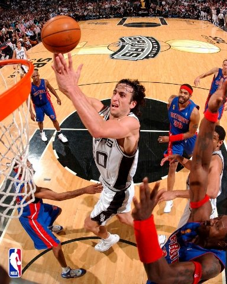

基本資料
綽號暱稱：MANU、阿根廷刺客、妖刀、鬼之切入
英文全名：Emanuel David Ginóbili
國籍：阿根廷 義大利
出生日期：1977年07月28日
出生地點：阿根廷布蘭卡港(Bahía Blanca)
身高體重：198公分、93公斤
職籃選秀：1999年美國職籃聖安東尼奧馬刺隊第二輪第57順位
攻守位置：得分後衛、控球後衛
職業生涯：1995年-96年安迪諾體育俱樂部
1996年-98年布蘭卡港籃球俱樂部
1998年-00年雷焦卡拉布裡亞俱樂部
2000年-02年博洛尼亞籃球俱樂部
2002-2018年聖安東尼奧馬刺隊(退休)
自從2002年籃球世錦賽（籃球世界盃前身）挺進決賽後，又在雅典奧運會創造奇蹟，連續斬落美國「夢之隊」，
奪得金牌。儘管後來風頭被西班牙稍稍蓋過，但很少人會不欣賞馬紐·吉諾比利(Manu Ginobili)、路易斯·斯科拉(Luis Scola)、
安德烈斯·諾西奧尼(Andres Nocioni)和卡洛斯·德爾菲諾(Carlos Delfino)這些球星優雅風騷的打球方式。
不可否認，從2016年裡約奧運會開始，隨著「黃金一代」的隱退，阿根廷的實力大打折扣，已經很難再對獎牌發起衝擊。

甚至在本賽季的NBA賽場上，我們見不到阿根廷球員的身影，人才遭遇斷檔，這也導致了很多球迷對現在這支阿根廷男籃還停留在略知一二的階段。
然而，「瘦死的駱駝比馬大」，阿根廷不管再怎麼退步，在短期內也絕非會淪為人見人欺的魚腩部隊。換言之，他們還是有個別球員擁有不錯的實力。
這其中，現效力於西班牙豪門皇家馬德里（Real Madrid）的法昆多·坎帕佐（Facundo Campazzo），就是名氣最大的一位。
他是唯一一位在「黃金一代」還沒有徹底退出時，便在國家隊冒出頭的球員，當年的潛力新星，如今也到了扛起大旗的年紀。
NBA生涯獎項
2×NBA最佳陣容三隊（2008、2011）
2×NBA全明星賽（2005、2011）
NBA年度最佳第六人（2008）
4×NBA總冠軍（2002、2004、2006、2013）
NBA最佳新秀陣容第二隊（2003）
20號球衣為聖安東尼奧馬刺隊退休